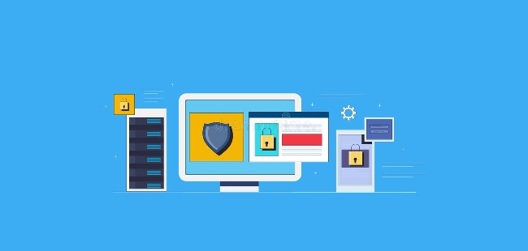
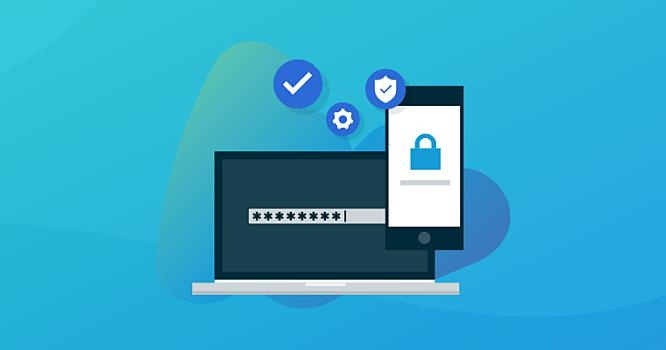

Scammers these days are so smart and are so adept at using technology to trick others - they often rely on phishing emails to scam their way into victims' accounts. And that means that anti-phishing tools, which detect and block malicious emails, are an important tool that everyone needs. You can reduce the chances that you will be tricked by scammers by implementing the following anti-phishing solutions.
Start with anti-phishing tools for anti-phishing toolbars. These are small downloads and programs that can be easily downloaded and put in your web browser.
Some applications come fully free of charge, while others may require a cost before downloading what's often a lightweight application. The computer software then helps you discover suspect phishing sites, running out of sight in the background of your computer.
Anti-phishing toolbars are useful, as they prevent unsafe links as you surf. It's helpful for those who are not particularly tech-savvy. But, there is a downside to this technology as well.
It's not necessarily a sign of quality and research has shown that this approach to phishing is relatively unsuccessful.
In reality, toolbars shouldn't be given an unfavorable reputation as a comprehensive defense against phishing threats. They can even be a helpful and effective thing in some situations.

Antivirus programs aren't necessarily intended against phishing, but as phishing is regularly accompanied by viruses they may be used in identifying and stopping such attacks. Particularly useful though, is that antivirus programs install firewalls, which work as a gatekeeper for traffic in your network.
Antivirus software ought to be found in any anti-phishing strategy, not just PC networks. But it wouldn't provide a complete solution to protect against phishing attacks.
This is the most obvious solution to the problem of phishing. Along with successfully stopping phishing, anti-phishing software helps to police malware, spoofing, spam, and other related topics.
It will be the logical place to start when developing a formidable network designed to filter out any illegitimate digital intruders. Anti-phishing software works by monitoring network traffic and deleting any harmful downloads or links. These programs also discard any of the.exe files, and accumulate any viruses or suspicious emails elsewhere.
Anti-phishing software has the possibility to prevent you from accessing overflowing websites. Of all three computer tools employed to combat phishing, anti-phishing software is associated with the best results. However, there are also a lot more points to think about in fighting against phishing.

Cloud-based solutions are also another type of cloud-based software with effective tools intended to guard against phishing attempts.
Cloud-based computer programs are revised very regularly, owing to the way that the cloud operates, while cloud-based programs are convenient, since ready-to-use apps can be incorporated into a cloud computing package.
Software programs are updated in the cloud because of the way the cloud functions, while applications that are put in cloud computing services are easily adapted for use.
Cloud technology allows integrated approaches to anti-phishing, complementing other anti phishing approaches.
Training workers is one of the ways companies can get rid of phishing attacks. There are many different training courses being developed in order to educate employees about the latest phishing techniques. It really is vital to send all employees on these courses.
Repeating the process of phishing training on a regular basis is recommended, and other methods, such as organizing simulated phishing attacks, particularly prevent phishing attacks as efficiently as possible.
Besides the importance of staff training, another reason towards employing it is a highly effective form of security. Along with ensuring that staff members are happy and benefit from having enhanced skills.
In conclusion, organizations must do everything they can to prevent phishing attacks that pose a threat. The best way to do this is to educate users on the dangers of phishing and get anti phishing solutions as the last line of defence.